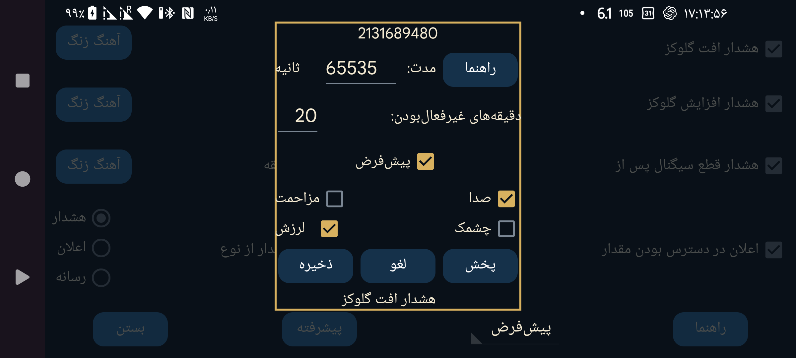

ar az be de es fa fr hi it ja ko nl pl pt ru tr uk uz zh en
برای هشدار یا اعلان تعیین کنید کدام آهنگ زنگ و بهمدت چند ثانیه پخش شود.
«دقایق غیرفعال»: اگر گلوکز همچنان پایین یا بالا بماند، هشدار بلافاصله تکرار نمیشود. با این گزینه تعیین کنید پس از چند دقیقه، در صورت ادامهٔ وضعیت، هشدار دوباره اجرا شود.
«صدا»: پخش صدای هشدار را روشن کنید.
«پیشفرض»: از صدای پیشفرض استفاده کنید.
«انتخاب»: آهنگ زنگ را انتخاب کنید. در برخی تلفنهای Samsung برنامهٔ ازپیشنصبشدهٔ انتخاب آهنگ از کار میافتد؛ در آن حالت میتوانید انتخابگر دیگری نصب کنید که برنامههای دیگر نیز بتوانند از آن استفاده کنند، مانند این برنامه یا انتخابگر آهنگ دیگر.
«لرزش»: لرزش دستگاه را فعال کنید.
«مزاحم نشوید»: اگر این حالت فعال باشد، پیش از پخش هشدار آن را خاموش کنید. اگر Juggluco مجوز لازم را ندارد، صفحهٔ تنظیمات Android برای اعطای مجوز باز میشود. برای آزمایش اینکه هشدار در حالت «مزاحم نشوید» شنیده میشود یا نه، این حالت را روشن کنید و «پخش» را بزنید. در نسخههای قدیمی Juggluco حالت «مزاحم نشوید» پس از هشدار دوباره روشن میشد، اما اکنون نه؛ چون این کار ممکن بود برنامهٔ زمانی خاموششدن خودکار آن را مختل کند. اگر نمیخواهید هنگام «مزاحم نشوید» هشدار بشنوید، احتمالاً باید گزینهٔ «هشدار بهعنوان زنگ هشدار» را در صفحهٔ قبلی نیز خاموش کنید.
«فلاش»: در تلفنهایی که چراغقوه دارند میتوان چراغ را به اندازهٔ مدت هشدار چشمکزن کرد؛ مثلاً زمانی که پخش آهنگ زنگ مجاز نیست.